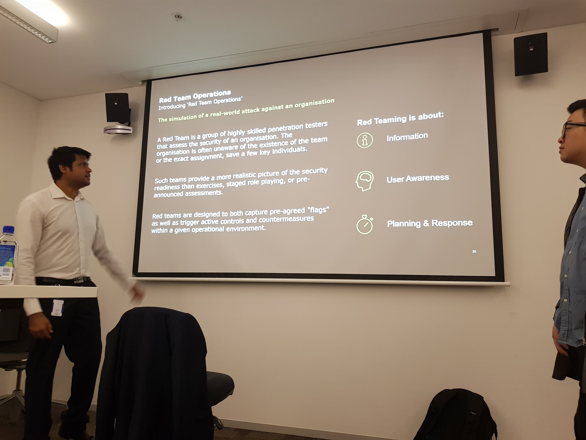

STUDIO PORTFOLIO SUBMISSION
ABOUT ME
My name is Andy Lee. I’m pursuing a Bachelor of Engineering (Honours) with Diploma in Professional Engineering Practice, majoring in Software and undertaking my 2nd year at UTS. I am quite passionate about cybersecurity and aspire to be a Cyber Security Engineer with focus in incident response (Blue Team). I love problem solving and learning new skillsets, so I dedicated most of my first-year to the UTS Cyber Security Society as an opportunity to learn and gain exposure to the industry. Throughout my studies so far, UTS has provided plenty of software and project- based subjects, however from the day I joined the UTS Cyber Sec, I have always looked for an accredited course that enabled more hands- on work in penetration testing. Thus, when Larry who is the head educator of this summer studio gave me an outline, I immediately jumped on board.

I have personally been involved in the Cyber Security Challenge Australia (CYSCA) 2018, placing first in the First-year division as the team strategist I hope to cover the offensive side of Cyber Security through this summer studio, Cyber Security: An Offensive Mindset. My personal goal for this module:
- Understand tools and techniques from OWASP top 10 to relate to vulnerable web applications.
- Gain a better understanding of the Cyber Security Sector in general.
SUBJECT LEARNING OUTCOMES(SLO)
There are 5 major subject learning outcomes with this course and the achievement of these outcomes will be outlined by this portfolio. The SLO’s are:
- Engage with Stakeholders to identify a problem (empathizing/ defining the problem)
- Apply Design Thinking to respond to a defined or newly identified problem
- Apply Technical skills to develop, model and/or evaluate design (refining/ test a prototype)
- Demonstrate effective collaboration and communication
- Conduct critical self and peer review and performance evaluation (both as an individual and a team)
SLO 1 (Engage with Stakeholders to identify a problem)
On the first day (4/02/2019) we were assigned to present upon a Cybersecurity topic of our own choice in groups of 4 to 5. The task was due on Wednesday (in two days), so I got to work immediately with picking out a group. The team I decided to join was composed of a mixed skillset, with the veterans being Jason, Andre and I as we were involved in the UTS Cybersec society beforehand. However, the new members: Frank and Vishal were both hard working software engineering students in their final year. The group selection gave us a perfect opportunity to practice our interpersonal, leadership and communication skills.

^ SLO 1 Artefact 1: We decided to use Microsoft Teams as a form of communication.
I strongly believe in the importance of team communication, so we used one of my preferred tools, Microsoft Teams to act as our project planner. After we dissected the project into 4 steps, we used google slides to complete our presentation slides. Of course, there was initial friction within the team when we were trying to decide upon the topic, but after a couple of rounds of voting we decided to research bug bounty and isolated “steam” as our technical case study. Overall the presentation went extremely smoothly and gave us an important insight of teamwork, and provided the students with a fresh way to learn from each other.
During the second week, I was tasked to present a high-level problem statement that I presented in class. Below is my problem statement:
PROBLEM STATEMENT (SLO 1)
In the midst of modern Cyber arms-race, human error still remains as the number one cause of data breaches. Human error accounts for more than half of all successful Cyber Security breaches, with social engineering being the forefront attack vector still relevant today. I have decided to incorporate this problem into the Web Application testing which we are currently undertaking this week.
Having a problem statement helped immensely to keep myself concentrated on understanding the concept behind the particular vulnerability.
SLO 2 (Apply Design Thinking to respond to a defined or newly identified problem)
The most difficult task given to us in week 1 was to create our own Static website to host weekly reflections, submissions and ultimately post our portfolio which is due in week 4.
We were given the following intro:
• Dynamic sites require the use of server-side scripting that increases the possibilities of vulnerabilities and attacks. Whilst dynamic sites are required for many web applications, static sites are gaining popularity for their simplicity and for their increased security
• Static sites are presented using plain HTML with no server-side scripting required. This usually requires the use of a static site generator that is able to take input files written in mark-up (e.g. Markdown)
In all honesty, other than a blog which I created using Blogger, I had no experience in creating a static website. Thus, after conducting my personal research, I first started with Jekyll to generate a site using an existing theme. However, I ran into many troubles with server hosting, so I decided to skip the static generation component and started with a template found on startBootstrap.com. After consulting with a senior software student(Vishal) who was familiar with front-end development, I was taught the Git process on the Friday afternoon.

^ SLO 2 Artefact 1: The succeeded Git push onto my master branch.
*Note: The dates are different as the project was moved to eportfoliov2 in the future.
I started off learning the utilisation of Hugo and GitHub-Pages, and through trial and error, I linked GitHub with GitKraken, a Git Client widely used in the development industry. Saturday was dedicated to the addition of all the content on this website and learning HTML on the go. It was quite the challenge as the only language I learnt during my first year was Java, but I viewed this as an opportunity to learn a new skill and further advance myself outside of my comfort zone.

^ SLO 2 Artefact 2: The Markdown code I used in this website.
The creation of the static website further reinforced the notion of combining technical skills outlined in SLO 3 with the creative adaption outlined in SLO 2 to overcome obstacles such as the problematic server.
SLO 3 (Apply Technical skills to develop, model and/or evaluate design)
During week 2, I addressed my problem statement towards the implications of Web application and social engineering. As I conducted my research, I came across a program that possessed a low ranked vulnerability called Click-Jacking. You can read more from my Journal here.
Wednesday of week 3 started off with a memorable presentation regarding Red Team operations and pentesting in general. The three presenters initally presented on the wide scope of Red Team Operations compared to the topic of penetration testing. The latter part of the presentation was hands-on, the aim was to gain root on a vulnerable virtual machine called “Piper”.

^SLO 3 artefact 1: Overview of Red Team Operations by Deloitte.
We then had a “Piper” walkthrough presented on Friday by Jai and Jason, providing great insight to the mindset when actually tackling such challenges. The walkthrough helped me significantly with my own attempt at “Mr. Robot” due to the similar method of privilege escalation.
SLO 4 (Demonstrate effective collaboration and communication)
During the third week, we were tasked to complete the following as a group:
- Present a case study on one or more tool(s), and how these tool(s) can be used to break into complex and vulnerable systems.
- Make sure to include examples.
- Keep it high-level.
- Presentations are to be 6 to 7 minutes. No less, no more.
- Presentations will be conducted in groups.
- Presentations will be held between 1PM and 2PM.
Similar to the first week presentation, I created a new team(Vishal, Ian, Frank and I) in Microsoft Teams as a planner for the presentation. Our topic was Aircrack-ng, a suite of tools for WiFi network security, and split the research into one major tool per person while Ian conducted the Intro and conclusion. Reflecting back at our team’s success at high- level presentations, I understand now the importance of team planning and meetings as it strengthened the flow of the presentation.

^SLO 4 artefact 1:Planner we used on Microsoft Teams.
Finally, During the 4th week of the studio, the final day was dedicated to present our research and what we have learnt from the studio to other students/teaching staff. Thanks to our teaching staff, we were able to book a room at level 5 with everyone having an access to a huge monitor to place our slides on. I personally formed a group with Ian and Vishal, as we were from the same group in week 3, and used a combination of phys Sec demo and slides to summarize our learning. From the first week of the studio, Larry has drilled into us the ability to convey concepts in both high and low level of complexity. Thus, I was able to smoothly rotate between the two complexity depending on the background of the students.

^SLO 4 artefact 2: My turn to present.
SLO 5 (Conduct critical self and peer review and performance evaluation)
Since the studio’s first day, the teaching staff was extremely supportive as they conducted their teaching. Larry was very direct and concise when disclosing information, while the Microsoft Team class group was also a great addition to aid our communication when we wanted to voice our questions. Darsh is very supportive in the communication side as he answered all my questions about the presentation task and gave our ideas great feedback.

^ SLO 5 Artifact 1: Darsh responding to my question on Teams.
Another feedback session was held between Larry and each student after the presentation, which encompassed our personal progress in the subject.
From the second week on, we also conducted something called a “scrum + free for all”, below is an example that occured during the third week:
Scrum, a well known method to addess complex adaptive problems was introduced to us from week 1. The execution was simple, the entire class was tasked to stand and report our current progress/difficulties to people we are unfamiliar to. After 6-7 minutes, Larry would choose a random person from each group to present their scrum notes to the class.

^SLO 5 Artefact 2: Notes on my peer’s progress and challenges.
The rundown for this week’s scrum:
Ian:
Participated in testing of real world applications(Bounty Programs).
Completed “Curling” from Hack The Box(HTB) and found that the part towards the end to be challenging.
Rowan:
Completing “Mr. Robot” HTB and found the privilege escalation component quite challenging.
Having trouble with the WPScan query.
Oliver:
- Completed “Fristi- Leaks” which was quite simple at first but was difficult for privilege escalation.
Andy:
Completed testing of real world applications(Bounty Programs).
Undertaking “Mr. Robot” from TryHackMe.
Found the WPScan to be ineffective for the site but used alternate method to enumerate user.
Throughout the past weeks Scrum has been a great addition to the course as it not only provided a chance to practice public speaking, but provided confidence to those who are isolated and stuck. Scrum breaks down the imaginary barriers we each built to isolate ourselves to the problems, and alters it into a collaboration effort. I am truly thankful to the educators of this course: Larry, Darsh, Jai and Luke for drilling this concept into us, as it will be the foundation of problem solving at professional work environments.
CLOSING THOUGHTS
As a starting second year student at UTS, summer has been an exhilarating ride for me. Participating in summer studio “Cyber Security: An Offensive mindset” and Engineering Practice Preparation 1 was quite challenging, as there was tasks due every two days. This journey pushed me again and again past the comfort zone I have always dwelled, exposing a new horizon of knowledge. Of course, this wasn’t achieved overnight, but I would like to first and foremost credit the educators: Larry, Darsh, Luke and Jai. Larry was the head educator and displayed unparalleled professionalism during the lessons, on the other hand, Darsh assisted in the communication and established a direct line of communication with the students. Luke and Jai were also quite amazing with their role of assistant educators, being able to utilize their industry knowledge often when answering our questions. One of the best things about this studio was the opportunity to choose our own area of specialisation, with mine being bug bounties and exploiting vulnerable virtual machines.
Overall, the 2019 summer studio was quite a challenging experience but has since redefined my skill of self-learning. The competitive learning environment was a big motivation factor, but through “free for all” sessions we were able to work together against common problems. I have successfully achieved my goals set at the beginning of the course and even surpass that to find my own path in the bug bounty side of the industry. I aim to now further the technical skills learnt to expose the potential bugs present in public systems

^ Some members from the Cyber sec Studio + me on the right.